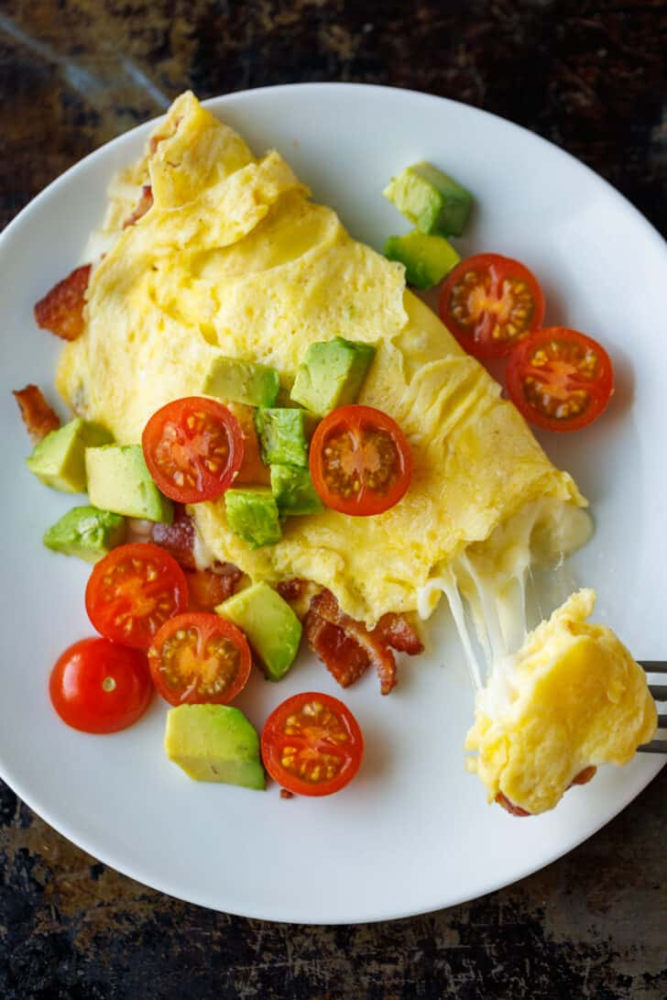

Here we are gonna learn how to make omelete

Learn how to make the perfect, tender and fluffy Omelette. The key to the perfect omelette is making sure you don’t overcook it. It should remain light yellow in color and never brown. You can customize a basic recipe in so many ways.
Ingredients :
Omelete Ingredients
- 2 large eggs
- Pinch fine sea salt
- 1/2 Tbsp unsalted butter
- 1/4 cup shredded mozzarella, low moisture, part-skim
Optional Fillings :
- Fresh spinach, coarsely chopped
- Sautéed mushrooms
- Crispy Air Fryer Bacon, chopped
- Sautéed diced bell pepper and onions
- Ham, diced
Optional Toppings:
- Chives or parsley, chopped, to garnish
- Salt and freshly ground black pepper
- Baby tomato halved
- Avocado, diced
Instructions :
- In a small mixing bowl, beat together eggs and a pinch of salt until foamy.
- Place a small nonstick skillet over medium heat and swirl in 1/2 Tbsp butter. Once butter is melted and bubbling, add frothy eggs to the skillet and immediately reduce the heat to low.
- Use a spatula to pull the cooked eggs into the center, letting the liquid egg fill the space behind it. Continue going around the pan, pulling the eggs towards the center until the eggs are nearly set.
- Once the omelette is sliding around the pan easily and you can get a spatula underneath, flip the omelette over and turn off the heat.
- Sprinkle cheese over the egg and add your favorite toppings. Fold the omelette in half and slide it onto your plate then garnish as desired.
Return to Main page